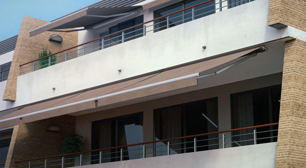

La selezione delle più cercate TendItalia
Le tende Tenditalia sono completamente
realizzate a mano
,allestite a scelta tra un'ampia gamma di tessuti e
colori.
Motorizzate con automatismi Somfy o Cherubini
e realizzate su misura, anche per progetti
personalizzati. Il catalogo offre le tipologie più
disparate di tende: da quelle a bracci a piastre
separate o a barra quadrata, dalle cappottine, da
quelle da giardino fino a quelle a caduta con telai
fissi.
Il catalogo offre tende per qualsiasi occasione:
Tende a bracci a piastre separate, Tende a
bracci a barra quadra, Cappottine, Tende da
giardino e Tende a caduta e telai fissi
Atlantica
La barra quadra 60X60, i bracci estensibili in alluminio forgiato e la catena inox a 4 maglie, rendono questo modello adatto a sporgenze fino a 575 cm. Le sue caratteristiche la posizionano nel top di gamma. Motorizzata di serie.

Mediterranea Light
Essenziale e funzionale. Tra le più facili da installare, la tenda modello Mediterranea light è composta dal solo rullo telo fissato tramite le piastre laterali. A differenza della Mediterranea, questo modello prevede supporti più piccoli che la rendono adatta a sporgenze fino a 225 cm.

Tevere
Una tenda che si presenta con una struttura leggera e ben distribuita; la sua installazione ha un bassissimo impatto visivo grazie al cassonetto ridotto (ospita solo il telo) ancorato sulla barra quadra.
Versilia
Presenta punti di forza quali il design sottile e la doppia inclinazione dei bracci che permette la copertura di spazi ben definiti. L'inclinazione è continua e micrometrica.

Fissa K40
Realizzata in due versioni: con e senza frontalino. Fissa consente di raggiungere sporgenze importanti conservando lo spazio e rendendo gli ingombri minimi.

Cupola K36-K50
Il design tondeggiante ad arco regolare e la cupola contribuiscono a migliorare l'estetica dell'edificio oltre che a garantire la massima funzionaltà.

Standard K36-K50
La classica. tenda da anni utilizzata sia per l'ottimale riparo dal sole che per il forte valore estetico attribuito alle strutture sulle quali viene installata. La misura della sporgenza coincide con quella dell'ingombro.

Stilè K36-K50
La tenda ottima per ogni esigenza. Stilè è il modello più versatile della categoria cappottine. Il design minimal e la struttura leggera rendono agevole l'applicazione in ogni tipo di spazio.
Garden
La tenda pensata per proteggerti dal sole durante il tempo passato in giardino.
Oceano
Goditi la freschezza del mare sotto un'elegante tende Oceano.

Attico
Ottimizzata per il tuo attico, presentata in 3 versioni: la standard, la maxi e la mini.
Elite Plus
Design e grandezza si incontrano nella tenda Elite Plus. I profili in alluminio estruso, con dimensioni maggiorate, la rendono robusta e, allo stesso tempo, le consentono di raggiungere sporgenze fino a 400 cm.